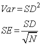
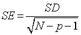
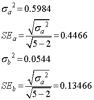
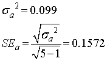

直線近似の場合の誤差の推定の検証（その２）
切片あり，なしでの結果は，
切片あり
切片なし

となりましたが，この値が正しいか，検証しましょう．
残念ながらエクセルではそれぞれのパラメータの誤差の推定ができません．
ですので，他のソフト，Kyplot，Originで検証しましょう．
Kyplot
フィット → 統計/プロット → OK
で，パラメータ推定，漸近的標準誤差（SE），にそれぞれのパラメータの誤差が表示されます．
その結果は，
切片あり 切片なし


となります．
Origin
解析 → フィット → 線形フィット
切片あり 切片なし


と同じ結果となります．
ここで，注意しなくてはならないのが，標準誤差（SE），です．
ここで整理すると，
分散 ＝ (標準偏差)2
標準誤差 ＝標準偏差÷（データ数）(1/2)
つまり，

ということなのですが．．．．この標準誤差の定義はあくまでNが大きい場合であって，正確には，

のようです，何でか．．は私は理解していません，ここのサイトを参考にしました．
ここで，ｐ，は独立変数の数です．
つまり，（たぶん．．），分母は，自由度の平方根，であると思われるので，
y=ax ： 自由度=5-1=4
y=a+bx ： 自由度=5-2=3
となります．
この値を二つのソフトは採用しているようです．
さて，実際に計算してみると，
・ y=a+bx

・ y=ax

となり，見事一致しました（この独立変数，自由度に関しては，もう少し勉強しなくてはなりません．．．．）．
以上が誤差伝搬法則を用いた誤差の推定となります．